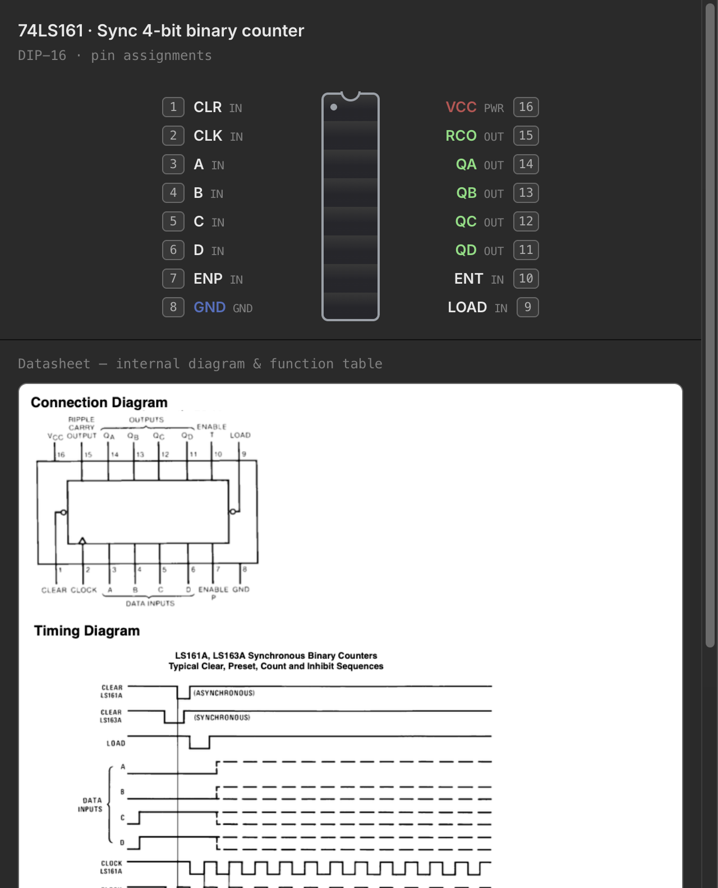

The Chip Library
The parts palette's CHIPS folder holds a broad shelf of DIP logic from two families — 74LS TTL, everything from a single quad NAND gate up to octal shift registers and 4-bit counters, and CD4000 CMOS — every one with a datasheet-accurate pinout and real behavior you can wire up and run. Past them, an Interface group carries the 65xx peripherals (a PIA and a VIA) and a PROCESSOR group carries the CPUs, while a separate Memory group sits below for the address-indexed ROM/RAM parts, which get their own dedicated page. This page is a tour of what's on the shelf and how to read a chip's pin-assignments window once you've placed one.
Choosing a logic family
Settings → Data Sheets → Chip family picks which family the parts palette
shows: 74LS (the default), CD4000, or Both. With one family, the
CHIPS folder is the familiar list of function groups — NAND, NOR, Flip-flop…
— holding that family's chips. With Both, CHIPS gains a 74LS folder and
a CD4000 folder, each holding its own function groups. The memory, interface
and processor chips belong to no family and are there in every mode.
It only filters the palette. A project's chips always load and run, whatever is chosen, and a family the open project uses is shown anyway — so you can add more of the parts already on its desk. Typing a CD4000 part number into the filter while CD4000 is hidden says where to switch it on.
The families differ in more than part numbers — see The CD4000 CMOS family below.
Combinational gates
The basic gate families — the classic 7400-series building blocks:
| Part | Description |
|---|---|
74LS00 |
Quad 2-input NAND |
74LS01 |
Quad 2-input NAND, open-collector — outputs on 1/4/10/13, not the classic quad-NAND layout |
74LS02 |
Quad 2-input NOR |
74LS03 |
Quad 2-input NAND, open-collector — the variant that does keep the classic layout (outputs on 3/6/8/11) |
74LS08 |
Quad 2-input AND |
74LS10 |
Triple 3-input NAND |
74LS11 |
Triple 3-input AND |
74LS20 |
Dual 4-input NAND |
74LS27 |
Triple 3-input NOR |
74LS30 |
8-input NAND |
74LS32 |
Quad 2-input OR |
74LS86 |
Quad 2-input XOR |
Open-collector parts (74LS01, 74LS03, 74LS05) pull their outputs low
only and assume an external pull-up on a real bench. Chip Hippo models them
as plain gates, so they behave correctly without one — but wire the pull-up
anyway if you're prototyping something you intend to build.
Alongside them, the inverter and buffer/bus-driver parts:
| Part | Description |
|---|---|
74LS04 |
Hex inverter |
74LS05 |
Hex inverter, open-collector |
74LS14 |
Hex Schmitt-trigger inverter |
74LS125 |
Quad tri-state buffer, active-low enable per gate |
74LS240 |
Octal inverting tri-state buffer/line driver |
74LS244 |
Octal (non-inverting) tri-state buffer/line driver |
74LS245 |
Octal bidirectional bus transceiver — the one part in the catalog with true bidirectional pins |
Sequential & MSI parts
Everything with internal state, plus the mid-scale-integration decoders and multiplexers that build address/data logic around them.
Flip-flops & latches
| Part | Description |
|---|---|
74LS73 |
Dual JK flip-flop, clear |
74LS74 |
Dual D flip-flop, preset & clear |
74LS76 |
Dual JK flip-flop, preset & clear |
74LS107 |
Dual JK flip-flop, clear |
74LS112 |
Dual JK flip-flop, preset & clear |
74LS174 |
Hex D flip-flop |
74LS175 |
Quad D flip-flop |
74LS173 |
4-bit D register, tri-state |
74LS273 |
Octal D flip-flop, clear |
74LS75 |
4-bit bistable (transparent) latch |
74LS279 |
Quad S̄R̄ latch |
74LS259 |
8-bit addressable latch |
74LS533 / 74LS573 |
Octal transparent latch, tri-state (inverting / non-inverting) |
The 74LS73, 74LS75, and 74LS76 reproduce their datasheet's
non-standard power-pin placement — real parts don't always put VCC and
GND on the package corners, and neither do these.
Counters & shift registers
| Part | Description |
|---|---|
74LS90 |
Decade (÷10) ripple counter |
74LS161 |
Synchronous 4-bit binary counter |
74LS169 |
Synchronous 4-bit up/down counter |
74LS193 |
Synchronous up/down 4-bit counter |
74LS164 |
8-bit serial-in, parallel-out shift register |
74LS165 |
8-bit parallel-in, serial-out shift register |
74LS595 |
8-bit shift register with output storage latch |
Decoders & multiplexers
| Part | Description |
|---|---|
74LS138 |
3-to-8 line decoder |
74LS139 |
Dual 2-to-4 line decoder |
74LS151 |
8-to-1 line multiplexer |
74LS153 |
Dual 4-to-1 multiplexer |
74LS157 |
Quad 2-to-1 selector |
74LS257 |
Quad 2-to-1 selector, tri-state |
Arithmetic, comparison & encoding
| Part | Description |
|---|---|
74LS47 |
BCD-to-7-segment decoder/driver |
74LS85 |
4-bit magnitude comparator |
74LS148 |
8-to-3 priority encoder |
74LS283 |
4-bit binary full adder |
74LS83 |
The same adder on its original pinout — VCC on pin 5, GND on pin 12, not the later JEDEC corners |
74LS181 |
4-bit arithmetic logic unit (DIP-24) — 16 logic or 16 arithmetic operations selected by S0–S3 and M, with carry generate/propagate outputs for cascading |
The CD4000 CMOS family
The 4000-series CMOS parts, each pinned out from its Texas Instruments datasheet. They are not pin-compatible with the 74LS parts of the same function — the CD4001B's NOR outputs are on pins 3, 4, 10 and 11, the 74LS02's on 1, 4, 10 and 13 — so read the pin-assignments window before wiring one.
| Part | Description |
|---|---|
CD4001B |
Quad 2-input NOR |
CD4002B |
Dual 4-input NOR |
CD4025B |
Triple 3-input NOR |
CD4078B |
8-input NOR/OR gate — both outputs |
CD4011B |
Quad 2-input NAND |
CD4012B |
Dual 4-input NAND |
CD4023B |
Triple 3-input NAND |
CD4068B |
8-input NAND/AND gate — both outputs |
CD4093B |
Quad 2-input NAND Schmitt trigger |
CD4081B |
Quad 2-input AND |
CD4082B |
Dual 4-input AND |
CD4073B |
Triple 3-input AND |
CD4071B |
Quad 2-input OR |
CD4072B |
Dual 4-input OR |
CD4075B |
Triple 3-input OR |
CD4030B |
Quad exclusive-OR — the original; the CD4070B is its successor |
CD4070B |
Quad exclusive-OR |
CD4077B |
Quad exclusive-NOR |
CD4069UB |
Hex inverter (unbuffered) |
CD40106B |
Hex Schmitt-trigger inverter |
CD4049UB |
Hex inverting buffer/converter — VCC on pin 1, VSS on pin 8, not the corners |
CD4007UB |
Dual complementary pair plus inverter — six bare MOSFETs, see below |
CD4050B |
Hex non-inverting buffer/converter — same odd power pins |
CD4013B |
Dual D flip-flop with active-HIGH set and reset (the 74LS74's are active-LOW) |
CD4027B |
Dual JK flip-flop with active-HIGH set and reset — raising both drives Q and Q̄ HIGH together |
CD4017B |
Decade counter with ten decoded outputs and a carry-out |
CD4022B |
Octal counter with eight decoded outputs — the 4017's divide-by-8 sibling |
CD4020B |
14-stage binary ripple counter — Q2 and Q3 have no pin |
CD4024B |
7-stage binary ripple counter, in a 14-pin package |
CD4040B |
12-stage binary ripple counter — counts on the falling edge |
CD4060B |
14-stage ripple counter with its own RC oscillator — or count an external clock on φI (see Timers) |
CD4029B |
Presettable up/down counter, binary or decade (a pin picks which) |
CD4510B |
Presettable BCD up/down counter with reset |
CD4516B |
Presettable binary up/down counter with reset |
CD4094B |
8-stage shift-and-store register — its 3-state OUTPUT ENABLE is active HIGH |
CD4028B |
BCD-to-decimal decoder, ten active-HIGH outputs |
CD4511B |
BCD-to-7-segment latch/decoder/driver for a common-cathode display |
CD4066B |
Quad bilateral switch — an analog switch, see below |
CD4051B |
8-channel analog multiplexer/demultiplexer — VEE on pin 7 |
CD4052B |
Dual 4-channel analog multiplexer/demultiplexer — VEE on pin 7 |
CD4053B |
Triple 2-channel analog multiplexer/demultiplexer — VEE on pin 7 |
CD4047B |
Monostable/astable multivibrator — timed by one resistor and one capacitor |
CD4098B |
Dual retriggerable monostable |
CD4528B |
Dual retriggerable monostable — its pulse lengthens with the supply |
CD4538B |
Dual retriggerable precision monostable |
CD4541B |
Programmable timer: an RC oscillator and a 16-stage counter |
What makes the family worth learning on is how it differs from TTL:
- A floating input is unknown, not HIGH. A 74LS input pulls itself up; a
CMOS input is a gate with nothing on it. Chip Hippo reads an unconnected
CD4000 input as
X, warns about it, and lets the unknown spread to whatever it feeds — a CD4017 with its RESET left floating loses its count. Tie every CMOS input, spare gates included, as the datasheets ask. - A much wider supply range. A CD4000 part runs from 3 V to 18 V, where a 74LS part needs 5 V — see Power & Clock Sources.
- Weaker outputs. One standard CD4000 output can hold only one 74LS input LOW; the CD4049UB/CD4050B buffers drive eight. Driving the other way, a 74LS HIGH is marginal for a CMOS input. Both are reported — see Mixing logic families. The weakness has an upside: at 5 V and below a standard output cannot burn an LED wired straight onto it, so one with no resistor lights.
The Schmitt-trigger parts (CD4093B, CD40106B) behave as plain gates here: their hysteresis is an analog property, and their classic RC oscillator will not run — a capacitor on the desk carries a value for the timing chips, but no charge. For an RC oscillator, use one of the timers.
A few of the larger parts have habits of their own:
- The up/down counters' carry is combinational. CARRY OUT on the CD4029B, CD4510B and CD4516B goes LOW at the end of the count — 15 (or 9) going up, 0 going down — while CARRY IN is LOW, and it follows UP/DOWN at once, without waiting for a clock. Wire one counter's CARRY OUT to the next one's CARRY IN and give them the same clock to chain them. Tie CARRY IN LOW on a counter on its own.
- A decade counter can be preset to a code that is not a digit. The jam inputs load any binary number, 10–15 included. The CD4510B's datasheet promises it counts back into 0–9 within two clocks going up and four going down, and Chip Hippo follows that part's logic gates to get there; the CD4029B's decade mode uses the same logic.
- The CD4511B blanks a code above 9, where the 74LS47 shows odd symbols. Its latch sits before the decoder, so LE/STROBE HIGH freezes the digit while lamp test (LT) and blanking (BL) still work on it.
- The analog switches drive nothing — they connect. A CD4066B switch whose CONTROL is HIGH, or the CD4051B/52B/53B channel that INH and the select pins pick, joins its two pins, so whatever drives one side drives the other, in either direction: the same 4051 multiplexes eight signals onto COM or demultiplexes COM out to eight. An open channel leaves each side to whatever else is on it, so a pin on an open channel with nothing else driving it floats. Chip Hippo passes logic levels only — the switch's on-resistance and analog voltages are out of scope — and a supply that passes through a switch arrives at the strength of an ordinary output: the + rail switched onto an output driving LOW is a fight, and a channel joining + to − is a short.
- The CD4007UB is six MOSFETs, not gates. Three N-channel and three P-channel transistors with their terminals brought out, each a switch exactly as a discrete MOSFET is: an N-channel joins its two terminals while its gate is HIGH, a P-channel while it is LOW, and a floating gate is unknown. Pair 1's P already sits on VDD and its N on VSS, so joining 13 to 8 makes an inverter from Q1 GATES (6); pair 3 is an inverter from Q3 GATES (10) to 12 once 11 is on VDD and 9 on VSS; pair 2's four terminals are all free. Thresholds and the part's analog uses — amplifiers, oscillators — are out of scope.
- VEE is a supply pin. The 405x parts have a negative supply, VEE (pin 7), for analog signals below ground. Chip Hippo has no negative supply, so tie VEE to VSS, as single-supply digital circuits do; until it is, the chip is unpowered.
- The CD4094B's outputs follow its shift register only while STROBE is HIGH, and its OUTPUT ENABLE floats them when it is LOW — the opposite sense of every 74LS output enable. The serial outputs QS and Q'S are never floated; Q'S gives the same bit half a clock later, for chaining a second 4094 on a slow clock.
Timers
Seven parts take their timing from a resistor and a capacitor you wire to them, as on a bench: the 555 (CHIPS ▸ Timer), and the CD4000 CD4047B, CD4098B, CD4528B, CD4538B and CD4541B (CD4000 ▸ Timer) and CD4060B (CD4000 ▸ Counter). Give the resistors and the capacitor their values in Properties… (see Component values) and the part runs at the rate its datasheet gives for them. There is no analog simulation behind it: each part finds its own resistor and capacitor in the wiring and works the time out from the datasheet's formula.
While the circuit runs, each timer prints its rate or pulse length under its part number, and its Properties… card shows the same under Timing:
| Part | Timing pins | Formula (datasheet) |
|---|---|---|
| 555 astable | RA from VCC to DISCH, RB from DISCH to TRIG + THRES, C from TRIG + THRES to GND | high 0.693·(RA+RB)·C, low 0.693·RB·C |
| 555 monostable | RA from VCC to THRES + DISCH, C from THRES + DISCH to GND | pulse 1.1·RA·C |
| 555 bistable | THRES to GND — no resistor or capacitor | none: TRIG LOW sets OUT, RESET LOW clears it |
| CD4047B | R between R (2) and RC COMMON (3), C between C (1) and RC COMMON (3) | Q/Q̄ period 4.40·RC (OSC OUT twice as fast), one-shot pulse 2.48·RC |
| CD4098B | per section: C from RX CX to CX (or GND), R from RX CX to VDD | pulse ½·R·C |
| CD4528B | per section: C from T2 to T1 (or GND), R from T2 to VDD — and T1 wired to GND | pulse 0.2·R·C·ln(VDD) |
| CD4538B | per section: C from RX CX to CX (or GND), R from RX CX to VDD | pulse R·C |
| CD4060B | Cx from φO (9), Rx from φ̄O (10), Rs from φI (11), all to one junction | oscillator period 2.2·Rx·Cx |
| CD4541B | Ctc from CTC (2), Rtc from RTC (1), Rs from RS (3), all to one junction | oscillator period 2.3·Rtc·Ctc |
Two resistors (or two capacitors) side by side between the same two points count as one, combined the way they would be on a bench. Two in series are not followed: put the single value you mean.
The 555 works out what it is
The 555 has no mode setting, because the chip has none. It reads its own wiring the way the silicon does:
- Astable — TRIG (2) and THRES (6) on one net with the capacitor from it to GND, and DISCH (7) between the two resistors: RA up to VCC, RB down to the TRIG/THRES net. It free-runs from the moment you press Run, starting HIGH.
- Monostable — THRES (6) and DISCH (7) on one net with the capacitor to GND and RA up to VCC, and TRIG (2) connected to something outside. A falling edge on TRIG starts a pulse; a trigger during the pulse changes nothing; a TRIG still held LOW when the time is up keeps the output HIGH until it is released.
- Bistable — THRES (6) tied to GND, and TRIG (2) connected to something outside: a set/reset latch with nothing to time. A LOW on TRIG sets the output HIGH and it stays HIGH; a LOW on RESET (4) clears it and it stays LOW. With both held LOW, RESET wins. The usual build is a pull-up resistor and a push button to GND on each of TRIG and RESET; DISCH (7) plays no part, so grounding it beside THRES, or leaving it open, is fine. It starts LOW when you press Run, and prints no rate on the chip.
Anything else is not guessed at. The part draws a warning triangle, a notification says exactly what it is missing ("no timing capacitor from TRIG/THRES (2, 6) to GND", or that the wiring is none of the three), and its output stays LOW. RESET (4) LOW forces the output LOW whatever the configuration and restarts the timing when it is released. CONT (5) is not modelled: a bypass capacitor to GND on it is the usual thing and harmless. The 555 runs from 4.5 V to 16 V.
The CD4000 timers
- CD4047B — ASTABLE (5) HIGH or ASTABLĒ (4) LOW makes it free-run: Q and Q̄ square-wave, with OSC OUT (13) at twice the rate. Otherwise it is a one-shot: +TRIGGER (8) rising while −TRIGGER (6) is LOW, or −TRIGGER falling while +TRIGGER is HIGH, fires one 2.48·RC pulse, which another trigger does not restart. The pulse is the internal oscillator running for whole periods, so RETRIGGER (12) rising during it, or held HIGH, runs it on by one more 2.2·RC period at a time — the datasheet's "will retrigger as long as the RETRIGGER input is high". The datasheet's retriggerable hook-up ties RETRIGGER to +TRIGGER, so every further trigger during the pulse runs it on. EXT RESET (9) HIGH ends it and holds Q LOW.
- CD4098B, CD4528B and CD4538B — two independent one-shots each, on the same pins. A section fires on +TR rising (with −TR held HIGH) or on −TR falling (with +TR held LOW) — the 4528 calls them A and B — is retriggerable (a new trigger during the pulse starts the time again), and RESET LOW (the 4528's CD) ends the pulse at once. A section with nothing on its timing pins and nothing on its outputs is unused and says nothing. The 4528 differs in two ways: its T1 pins (1 and 15) are not grounded inside the part, so wire them to GND or the section reports it and times nothing; and its pulse depends on the supply — 0.2·R·C·ln(VDD) is 0.32·R·C at 5 V and 0.54·R·C at 15 V. (Its datasheet is a current second source's, HGSEMI's; TI never documented this part. Makers disagree: another maker's CD4528 sheet gives 0.42·R·C at 5 V, falling to 0.30·R·C at 15 V.)
- CD4060B — with the RC network on φO, φ̄O and φI it runs its own oscillator and counts it; RESET HIGH clears the count and stops it. With nothing on φO and φ̄O, φI is an ordinary clock input, counted on its falling edges — the way its example circuit uses it. A network with a piece missing is reported, not guessed at. A crystal (the datasheet's other oscillator) is not offered: the desk has no crystal to put there.
- CD4541B — the same idea with a programmable output. With the RC network on CTC, RTC and RS it runs its own oscillator (CTC drives it out, RTC its complement); with nothing on CTC and RTC, RS is a clock input counted on its falling edges. A and B pick which counter stage is the OUTPUT: 2^13 with both LOW, 2^10 with B HIGH, 2^8 with A HIGH, 2^16 with both HIGH. MODE HIGH recycles — a square wave at the oscillator ÷ 2^N; MODE LOW makes a single transition 2^(N−1) counts after a reset and holds it. Q/Q̄ SELECT HIGH inverts the output. MASTER RESET HIGH clears the count and stops the oscillator; with AUTO RESET LOW it starts by itself when you press Run, and with AUTO RESET HIGH it waits for a MASTER RESET pulse first.
Faster than the desk can show
A timer is drawn no faster than 100 Hz — the top of the clock brick's own
rate list — at ×1; the speed control scales it with everything else. A timer
set faster than that still reports its true rate —
the readout says 48.1 kHz, in amber, and the Timing row adds Faster than
the desk can show: drawn at 100 Hz — but its output is drawn oscillating at
100 Hz with its duty cycle kept, so an LED on it flickers rather than
appearing steadily lit. A CD4060B counting a fast oscillator still divides it
down correctly: every stage slow enough to show keeps the true count, and only
the stages faster than 100 Hz are drawn at the cap. Likewise a pulse shorter
than 5 ms is stretched to 5 ms, so it can be seen at all; the readout still
gives the real length.
Time runs at the transport's speed, so Pause freezes it and Step moves it to the next edge (see The transport).
Interface chips (65xx)
Past the 74xx groups, the Interface group carries two Western Design
Center 65xx peripherals — both DIP-40, both clocked off PHI2, both wired the
same way you'd wire them on a real single-board computer:
| Part | Description |
|---|---|
W65C21 |
W65C21 PIA (CMOS 6521/6821) — two 8-bit bidirectional ports with per-line data-direction registers, plus four handshake/interrupt lines |
W65C22 |
W65C22 VIA (CMOS 6522) — the same two ports plus two 16-bit interval timers, an 8-bit shift register, and four handshake lines |
They're logic-level, not cycle-accurate: nothing here models wall-clock
timing, so the VIA's timers count PHI2 cycles rather than seconds.
A few practical notes for building with them:
- Address one of the peripherals by holding its chip selects (
CS0·CS1high andCS2Blow on the PIA;CS1high andCS2Blow on the VIA), picking a register withRS0–RS1(PIA) orRS0–RS3(VIA), settingRWB, and pulsingPHI2— writes latch on the falling edge. IRQBis open-drain on both peripherals, so give it a pull-up.- You can drive the bus by hand — set the address, selects and
RWB, then pulsePHI2— or wire a CPU to it from the group below.
Processors
The PROCESSOR group carries the two 8-bit CPUs, both DIP-40. Each is a full instruction-set simulation, so a program in a ROM or RAM really does fetch and execute one instruction at a time:
| Part | Description |
|---|---|
W65C02 |
W65C02S 8-bit CPU — 16-bit address bus (A0–A15), 8-bit data bus (D0–D7), RWB, RESB, IRQB/NMIB, and SYNC pulsing high on each opcode fetch |
Z80A |
Zilog Z80A 8-bit CPU — the same 16-bit address and 8-bit data buses, plus /MREQ, /IORQ, /RD, /WR, /M1, /RFSH, /HALT, /WAIT and /BUSRQ///BUSACK |
They disagree about the clock, and it shows in how you wire them. The
W65C02 makes exactly one bus access per PHI2 cycle, so its address bus
advances once per clock. The Z80 does not: an opcode fetch is four T-states
with a memory-refresh cycle glued to its back half, a plain read is three, and
an I/O cycle is four — so a Z80 instruction takes several clock cycles, /M1
marks which cycle is the opcode fetch, and /RFSH pulses behind it.
A few practical notes:
- Both power up in reset. Wire the reset pin to a push button to hold it.
The W65C02 then boots from the reset vector at
$FFFC/$FFFD; the Z80 has no reset vector at all and simply starts fetching at$0000. - Every Z80 control line is active LOW, which is what the leading slash in its pin names records — the app has no way to draw an overbar.
- The Z80 gives you real chip-select and strobe lines. Wire
/MREQto a memory's/CE,/RDto its/OEand/WRto its/WE. That combination matters: during the refresh half of a fetch/MREQpulses low again while/RDstays high, so a correctly wired memory does not drive the bus against the CPU's own refresh address. /IORQselects a separate 256-port I/O space, reached withIN/OUTand entirely distinct from memory. The 65xx bus has no equivalent — there, peripherals are memory-mapped.- Z80 addressing is a little scrambled on the package.
A0–A10sit on pins 30–40 andA11–A15wrap round to pins 1–5; the data bus is not in pin order either. The pin-assignments window is worth keeping open. - These parts have no example circuit (see below) — you can't demonstrate a CPU by flipping switches at it. What you want instead are the worked 65xx machines shipped as ordinary project files; see Files, Saving & Undo.
Memory chips
The Memory group carries the address-indexed parts: a couple of generic teaching ROM/SRAM chips plus real-shaped EEPROM/EPROM/SRAM parts on wider DIP packages. Reads and writes are wired up the same way as every other chip in the catalog, but a non-volatile chip's contents live in a real file on disk and are programmed through a dedicated in-app tool rather than by the circuit itself. See Memory Chips & the Inspector for the full story — file-backing, the external programmer, and the hex/ASCII inspector.
The pin-assignments window
Right-click any chip — or a package-footprint discrete like the bar8iso
LED bar, which seats and rotates exactly like a DIP chip even though it isn't
one — and choose Pin Assignment, at the top of its context menu, to open
its pin-assignments window: a small, floating window separate from the
main desk, showing the physical DIP layout with the notch
at the top, pin 1 at the top-left, and pin numbers wrapping down the left side
and back up the right to the highest pin at the top-right, exactly as printed
on the part.

For a real chip this layout is always the canonical, fixed arrangement —
it matches the physical part regardless of how you've flipped it on the desk,
because a real chip's pin-1 dot is a physical feature of the package, not
something rotation changes. bar8iso is the one exception: it has no real
notch to key off, so its pin-assignments window reflects its current R
flip on the desk — rotate it and the corners in the dialog swap to match.
Below the pin map, chips that have one show the manufacturer's datasheet crop — a cropped image of the connection diagram or function table pulled straight from the source datasheet PDF. If a chip has no crop on file, that part of the window simply isn't there — the pin map alone is still complete and accurate.
When Settings → Data Sheets points at a local folder containing that chip's full datasheet PDF, the window also grows a small document button in its top-right corner; clicking it opens the PDF itself in your system's PDF viewer. This is independent of the built-in datasheet crop — you may have one, both, or neither for any given chip.
Example circuits
A pin map tells you where the pins are; it doesn't show you the part working. So almost every 74LS and CD4000 chip in the catalog ships with a worked example — a small bench built around that one part — and the pin-assignments window is where you reach it. Look for the circuit button in the window's top-right corner, beside the datasheet one.
Click it and the example arrives as a new desktop in the open project,
called 74LS138 example (or whichever part it is), already framed on screen.
Every one is the same bench, so once you can read one you can read them all:
- a 5 V brick feeding both power rails, and a clock for the clocked parts;
- switched inputs on the left, each throwing between +5 V and a pull-down so an input is never left floating — a part with more inputs than will fit gets a DIP switch bank over a resistor network instead. A CD4000 bench also ties every input it does not switch, spare gates included;
- the chip under test in the middle, straddling the trench;
- LED read-outs on the right, one per output, through its own resistor. An active-LOW output has its LED wired the other way up, so a lit lamp always means this output is asserted;
- a caption above the bench saying what the demo shows.
Press Run (Space) and flip the switches. Each example opens in a state chosen to show the part doing something.
The 555 is the exception: there is nothing to switch, because what it does
depends on how it is wired. Its example brings three desktops, one per
mode — NE555 Monostable example, NE555 Bistable example and
NE555 Astable example — each built the way you would on a bench, with an LED
on the output. Press the button on the monostable for a 1.1-second pulse;
press SET and RESET on the bistable to latch the LED on and off; the astable
blinks on its own at about 0.6 Hz. You land on the first; the others are the
next tabs along.
A few practical notes:
- It's an ordinary desktop and an ordinary unsaved change — it doesn't reach your project's file until you save, and you can rename it, edit it, or delete it like any other.
- Asking for the same example twice doesn't make a second copy; you land back on the desktop you already have. For the 555, only a desktop you have deleted is added again.
- Adding it stops a running simulation, exactly as switching desktops does.
- Parts with no bench have no button: the memory and interface chips (a RAM or a CPU can't be demonstrated by flipping switches at it — those are the computer demos, which need a program), the CD4000 RC timers (CD4047B, CD4098B, CD4528B, CD4538B and CD4541B — a timer's bench is its resistor and capacitor, not switches), and every discrete, brick and wire. The CD4060B's example counts a clock brick on φI rather than running its oscillator.
Datasheets
The datasheet crops shown in the pin-assignments window are committed image
assets cut by hand from the manufacturer PDFs, not fetched or rendered at
runtime — they work offline and load instantly. A part with no crop on file
simply shows its pin map with no image below it: four 74LS parts have no
matching 74LS* datasheet (74LS164, 74LS193, 74LS27, 74LS76), and the
CD4000 parts' crops are still being cut. Pointing Settings → Data Sheets at your own folder of
manufacturer PDFs is a separate, optional feature — it doesn't add or replace
the built-in crops, it just adds the "open datasheet PDF" button for any part
whose PDF you have on hand.
Need a part the library doesn't have? Custom Chips covers designing your own.
See also Chips & Components for how chips seat into a breadboard, and Memory Chips & the Inspector for the memory group's file-backing and inspector.